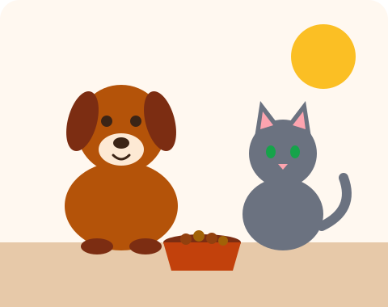

Alimentamos
Mantemos pontos de alimentação nos bairros, com ração e água limpa todos os dias.
ONG de proteção animal
A Pata Amiga é uma organização que alimenta, cuida e encontra novos lares para cães e gatos abandonados nas ruas. Acreditamos que toda vida merece um pote cheio e um lugar seguro para dormir.

Mantemos pontos de alimentação nos bairros, com ração e água limpa todos os dias.
Levamos animais resgatados ao veterinário, com vacinação e castração.
Conectamos cada pet recuperado a uma família responsável e preparada.
Doando ração, sendo voluntário ou oferecendo um lar temporário. Toda ajuda conta.
Fale com a gente